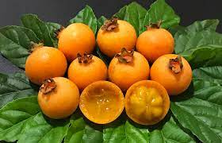
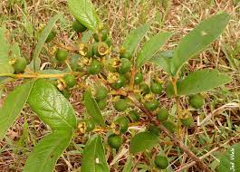
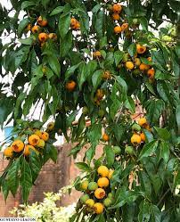

Gabiroba
Gabiroba, guabirova, guavirova, araçá-congonha, gabiraba ou são os nomes populares dado ao fruto produzido pela Campomanesia xanthocarpa, árvore da família Myrtaceae. No estado brasileiro de Mato Grosso do Sul, é conhecida por “Guavira”.
Etimologia
"Gabiroba", " Guabiraba", "Guabiramba", "guavirova", "gavirova" e "guabirova" originam-se da junção dos termos tupis wa'bi, "ao comer" e rob, "amargo". "Araçá" originou-se do termo tupi ara'sá e "congonha" originou-se do termo tupi kõ'gõi, "o que mantém o ser"
Sobre
Um fruto nativo que serve de alimento para diversas espécies de animais, mas vem sendo cada vez mais incluída na dieta do nosso dia a dia.
A guabiroba ou gabiroba, como é conhecida em algumas regiões, é uma espécie nativa do Brasil, presente nos Biomas Cerrado e Mata Atlântica.
Seu nome tem origem tupi e significa “árvore da casca amarga”. De fato, o tronco da gabirobeira (nome científico: Campomanesia xanthocarpa) é repleto de lascas que se desprendem de sua casca, formando um bonito aspecto natural.
Além disso, entre os meses de setembro e novembro, a árvore possui uma floração abundante e por isso é bastante usada como árvore ornamental.
Morfologia e Distribuição
Árvore semidecídua, de copa densa e alongada, de 4-15 m de altura, com tronco canelado e descamante, nativa deis de Minas Gerais e Mato Grosso do Sul até o Rio Grande do Sul em quase todas as formações vegetais dessas regiões.
Distingue-se das demais por possuir folhas totalmente desenvolvidas na antese e por ter geralmente um tufo de pelos nas axilas das nervuras principalmente na face inferior, além dos pedúnculos glabros e mais longos que as flores e lobos do cálice oblongos-obovados. Flores solitárias, formadas de setembro a novembro. Frutos arredondados, lisos, amarelos ou alaranjados, com polpa suculenta, firme e de sabor doce, com maturação de novembro-dezembro.